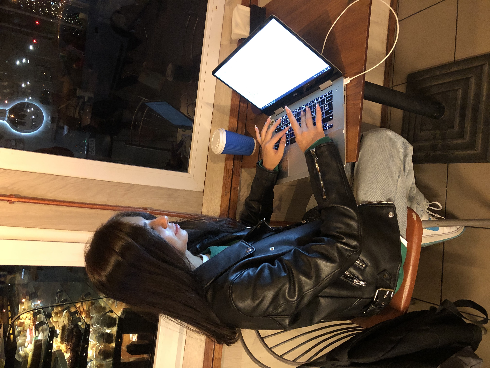

Працюю над створенням власного сайту. Один мій знайомий сказав, що працювати в кафе приємніше ніж вдома, раніше я категорично віідмовлялася погоджуватися з цим, але спробувала і дійсно концентрація набагато краща ніж в домашній атмосфері.